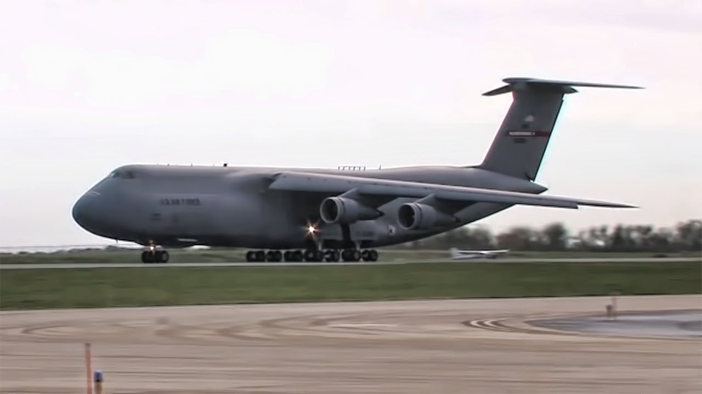
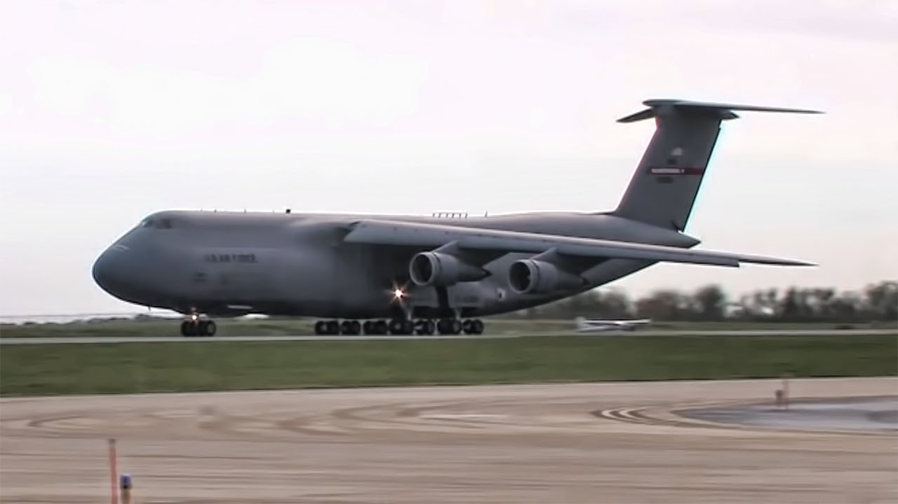
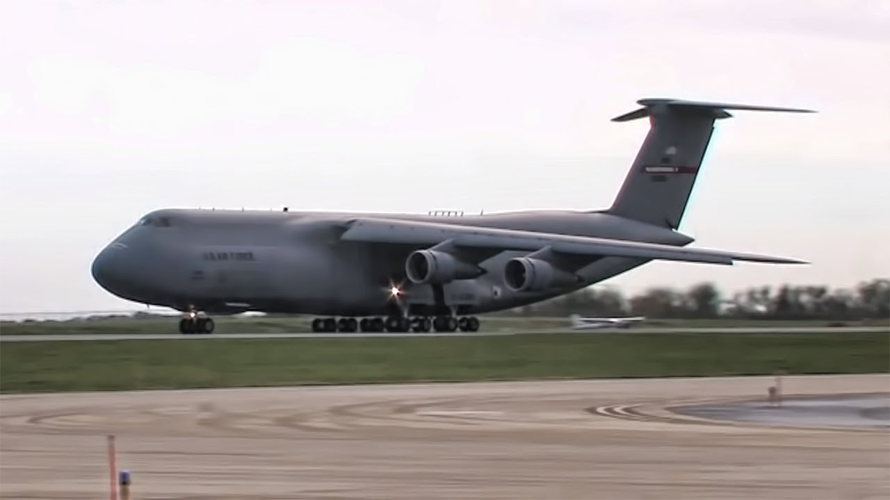

| combat | fighters |
|---|---|
| bombers | |
| attack | |
| multirole | |
| non-combat | military transport |
| Airborne early warning and control | |
| experimental |
Military transport (logistics) aircraft are primarily used to transport troops and war supplies. Cargo can be attached to pallets, which are easily loaded, secured for flight, and quickly unloaded for delivery. Cargo also may be discharged from flying aircraft on parachutes, eliminating the need for landing. Also included in this category are aerial tankers; these planes can refuel other aircraft while in flight. An example of a transport aircraft is the C-17 Globemaster III. A World War II example would be the C-47. An example of a tanker craft would be the KC-135 Stratotanker. Helicopters and gliders can transport troops and supplies to areas where other aircraft would be unable to land. Calling a military aircraft a "cargo plane" is incorrect, because military transport planes also carry paratroopers and other soldiers.
